Test report 23 – pure Rust kernel and parallel CSG evaluation
1 Result
- Pure Rust.
kernel-smlib,smlib/, the facade, the Emscripten build and the cmake/ninja/libstdc++ requirements are removed; solidcore is the only kernel in CLI, daemon, desktop engine and browser (one Wasm module).cargo treelistscconly as a build dependency that compiles nothing (blake3 withpure) and for Tauri's Windows resources. - Same geometry. SMLib's per-node results were frozen before the removal (
tests/kernel-reference.json); solidcore matches 2596 of 2604 nodes, the 8 others are listed exactly in a test. The nine examples render with under 0.21 % of the pixels changed. - Parallel CSG.
--jobs N/MCAD_JOBSevaluates independent nodes on N worker threads, each with its own kernel. Results are bit-identical to the sequential run. - Faster than the old single-threaded C++? No, not in general. Over the 16 models solidcore with 4 threads needs 1.57× SMLib's engine time, over the corpus 1.53×. solidcore alone is slower than SMLib (1 thread: 1.81×); threads win back only 10–30 %, because the time of most models sits in one chain of dependent heavy operations (section 5). Models with several independent heavy bodies (
housing) or where solidcore is faster per operation (09-flashlight,text_sign) beat SMLib. Meshing (STL export) is faster in solidcore and narrows the gap for full exports.
2 Commits
| Commit | Title |
|---|---|
9f495aa | CLAUDE.md, cad-cli skill: pure-Rust build, diff-reference, --jobs |
b8debf7 | CLI: --jobs N / MCAD_JOBS for evaluation on threads; daemon and desktop engine |
b12dcb1 | Engine: set_workers(jobs) starts jobs worker threads |
b1ae8ef | Engine: evaluate independent nodes on worker threads |
d8eaf0a | Kernel::begin_node; solidcore shapes shareable between threads |
0877a5e | STL import: face loops start at their smallest vertex |
3abb990 | blake3 with the pure feature: no C compiled for hashing |
9f91dc9 | Browser: wasm profile at opt-level 3; e2e of radius laws on solidcore |
b49bf31 | cad-tess: corpus example without an unused mut (clippy) |
1866041 | Remove SMLib's build steps and sources; docs for the pure-Rust build |
53d6455 | Browser: one Wasm module with solidcore, no smlib.wasm |
01520a7 | Make solidcore the only kernel; remove kernel-smlib from the workspace |
37957ce | kernel-solidcore: catch a union that repeats a body as a void; places of tangent contacts |
859780f | diff-kernels: freeze SMLib's per-node results in tests/kernel-reference.json |
3 Phase A: SMLib removed
| Part | Change |
|---|---|
| Reference data | While SMLib still built: diff-kernels --write-reference froze SMLib's results of all 101 corpus files (2604 nodes; volume, faces, edges, selected edges, B-rep positions of the 260 blended nodes) into tests/kernel-reference.json (6.2 MB, 690 kB gzip). Checked against the live comparison before removal: every node the same verdict, rule and notes. |
| CLI | mcad diff-kernels → mcad diff-reference REF.json [FILE…] [--mesh] (same rules). --kernel, MCAD_KERNEL and the cargo feature solidcore are gone. |
| Variable radius | Edges of one fillet with different radius laws: error “variable radius is not supported: fillet of N edges with different radius laws (A–B mm); use a constant radius” (German and English), body stays unfilleted. One law for all edges and constant radii per edge work. |
| Kernel fixes found by the switch | (1) Union of bodies that do not overlap could return one body a second time inside out as a void – wrong volume without any warning (stencil glyph “c”: 2.02 instead of 7.30). Now detected (more shells than both operands, two alike) and merged. (2) Failures at tangential contacts had no place (no operands in the message, no mark in render): geometric fallback over the contact edges. |
| Determinism bug (found in phase B) | STL import started each face loop at the first key of a HashMap: volumes of spec/stl_import.mcad changed in the 10th digit from run to run, also sequentially. Now the smallest vertex. |
| Browser | one Wasm module, profile wasm (opt-level 3, fat LTO): 34.3 MB raw, 10.8 MB gzip, 6.66 MB Brotli (before with SMLib: 39.3 MiB, 6.2 MiB Brotli). opt-level “z” would give 4.97 MB Brotli but is 2.4× slower (macropad 85 s vs 36 s in Node; e2e S04/S06 time out). |
Reference comparison (mcad diff-reference tests/kernel-reference.json --mesh)
| Nodes | same | unsupported | blocked | differ | failed |
|---|---|---|---|---|---|
| 2604 in 101 files | 2596 | 3 | 3 | 2 | 0 |
Unsupported/blocked: the six variable-radius nodes of variable_radius. Differ: sketch_cable_duct (open point of the handover) and f11 (SMLib fails, solidcore succeeds). Volume rules used: relative 2293, exact 129, operands 67, curved 25, blend 70. Meshes at 0.05 mm: 100 ok and watertight, 1 skipped, largest chord error 0.0500 mm.
Renderings: SMLib (left) and solidcore (right)
mcad render FILE --style studio --size 900x675, debug builds (render times include the studio pass). Pixel counts: share of pixels whose grey difference exceeds 40/255.
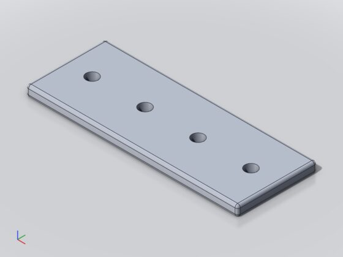
01-plate – SMLib (17.1 s debug render)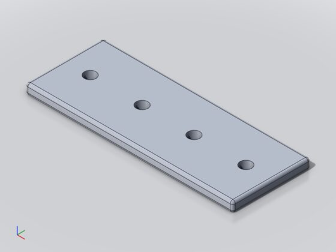
01-plate – solidcore (15.0 s); 0.01 % of the pixels differ by more than 40/255; release --jobs 4 vs --jobs 1: pixel-identical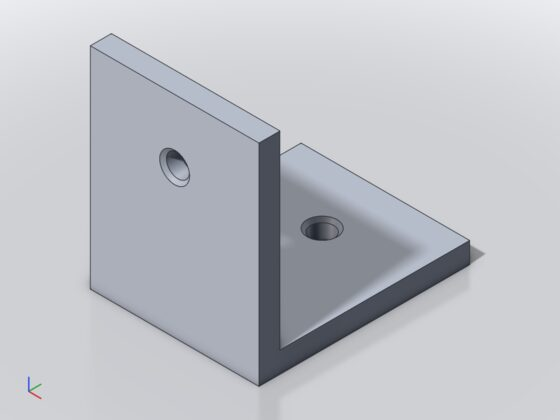
02-bracket – SMLib (15.0 s debug render)02-bracket – solidcore (13.3 s); 0.00 % of the pixels differ by more than 40/255; release --jobs 4 vs --jobs 1: pixel-identical03-tray – SMLib (13.5 s debug render)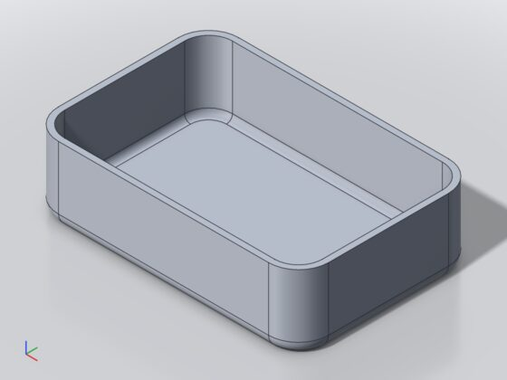
03-tray – solidcore (13.3 s); 0.02 % of the pixels differ by more than 40/255; release --jobs 4 vs --jobs 1: pixel-identical04-hook – SMLib (14.2 s debug render)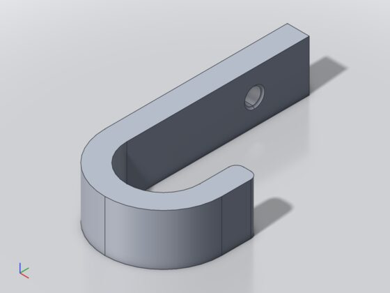
04-hook – solidcore (14.3 s); 0.06 % of the pixels differ by more than 40/255; release --jobs 4 vs --jobs 1: pixel-identical05-box-lid – SMLib (14.2 s debug render)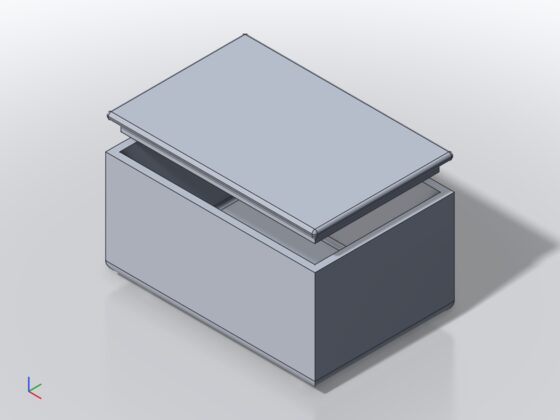
05-box-lid – solidcore (14.5 s); 0.00 % of the pixels differ by more than 40/255; release --jobs 4 vs --jobs 1: pixel-identical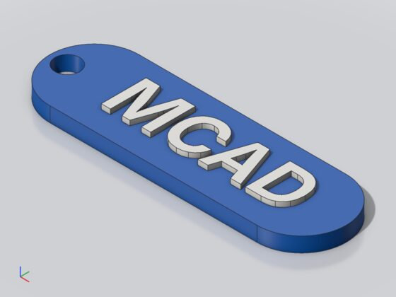
06-name-tag – SMLib (14.3 s debug render)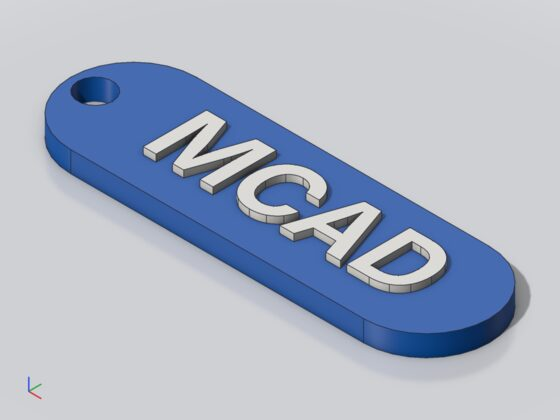
06-name-tag – solidcore (14.6 s); 0.05 % of the pixels differ by more than 40/255; release --jobs 4 vs --jobs 1: pixel-identical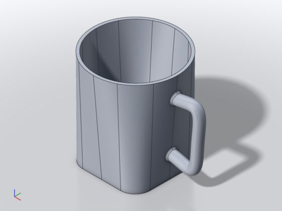
07-mug – SMLib (17.8 s debug render)07-mug – solidcore (25.7 s); 0.06 % of the pixels differ by more than 40/255; release --jobs 4 vs --jobs 1: pixel-identical08-macropad – SMLib (45.4 s debug render)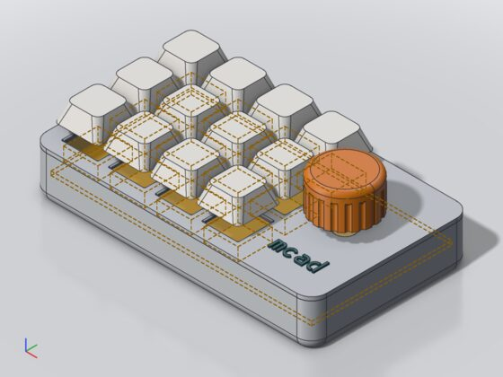
08-macropad – solidcore (46.8 s); 0.21 % of the pixels differ by more than 40/255; release --jobs 4 vs --jobs 1: pixel-identical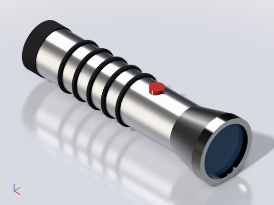
09-flashlight – SMLib (32.4 s debug render)09-flashlight – solidcore (22.0 s); 0.07 % of the pixels differ by more than 40/255; release --jobs 4 vs --jobs 1: pixel-identical4 Phase B: parallel evaluation of CSG branches
| Part | Design |
|---|---|
| Thread pool | cad-engine/src/pool.rs: N worker threads (stack 256 MB, solidcore recurses deeply), each with its own kernel built in its thread; tasks are single nodes, results come back over a channel. A worker panic is re-raised on the dispatching thread; tasks of a dropped job are skipped. |
| Scheduling | Job::step_parallel: a node is ready when its children are done (a zone also waits for its block's body). Ready nodes go out in post-order. Cached nodes, 2D, empty and plain primitives run on the dispatching thread. A node whose cache key is already running waits and counts as a cache hit, so nodes, cache hits and kernel calls equal the sequential run. |
| Determinism | Every node, sequential or parallel, starts with Kernel::begin_node(seed), the seed derived from its cache key: solidcore gets a fresh solidcore::Kernel (rng, fillet step, size estimate) and its copy key domains from the seed. A node's result depends only on its inputs, not on what ran before. Tags are interned before, diagnostics collected in tree order after. |
| Shapes | solidcore shapes are Arc<ShapeData>, B-rep in a ShapeCell, memos behind mutexes (Send + Sync). |
| UI step budget | A step dispatches, then waits until a node finished and the deadline passed (or all done); running nodes continue in the background. --jobs 1 and wasm32 use the previous loop. |
| Interface | --jobs N (1–256) on evaluating commands, default MCAD_JOBS, else the number of CPUs; invalid MCAD_JOBS → exit 2. Daemon (per call) and desktop engine process take it; the browser stays sequential. |
Determinism and parallelism tests
| Test | What |
|---|---|
cad-cli/tests/cli.rs parallel_evaluation_is_deterministic | diff-reference --mesh --json over all 101 reference files with --jobs 1 and twice --jobs 4: identical per-node status, message, volume, faces, edges, selected edges, mesh hashes; eval --json of macropad, flashlight, mug, key_rack, hull_minkowski, project-housing with 1, 2, 4 threads identical |
cad-engine/tests/parallel.rs (3) | at least two Booleans run at the same time; identical subtrees are cache hits; all examples and spec models with 1 vs 4 threads (twice, plus a shared engine run): same reports, keys, volumes to the bit, statistics |
| Renders | the nine examples rendered with --jobs 4 against --jobs 1 (captions in section 3) |
5 Performance: solidcore with threads against single-threaded SMLib
Columns SMLib … --jobs 4: wall time of mcad eval in seconds (process start to exit; median of 5 rounds). Ratios: engine time (stats.kernel_ms, the evaluation itself) relative to SMLib; below 1 = faster than SMLib. STL: mcad export FILE -o x.stl, one run (evaluation + meshing + writing).
| Model | nodes | SMLib | jobs 1 | jobs 2 | jobs 4 | jobs 1 / SMLib | jobs 4 / SMLib | STL SMLib | STL jobs 1 | STL jobs 4 |
|---|---|---|---|---|---|---|---|---|---|---|
01-plate | 12 | 0.15 | 0.33 | 0.30 | 0.36 | 2.31× | 2.50× | 0.59 | 0.74 | 0.75 |
02-bracket | 7 | 0.11 | 0.26 | 0.26 | 0.27 | 2.51× | 2.61× | 0.49 | 0.57 | 0.65 |
03-tray | 11 | 0.42 | 0.79 | 0.86 | 0.90 | 1.91× | 2.18× | 1.06 | 1.82 | 1.81 |
04-hook | 5 | 0.10 | 0.20 | 0.21 | 0.18 | 1.99× | 1.83× | 0.26 | 0.40 | 0.45 |
05-box-lid | 29 | 0.53 | 1.27 | 0.84 | 0.85 | 2.76× | 1.76× | 1.13 | 2.51 | 1.89 |
06-name-tag | 15 | 0.64 | 0.82 | 0.78 | 0.77 | 1.30× | 1.21× | 3.06 | 3.38 | 2.90 |
07-mug | 11 | 2.72 | 10.46 | 9.24 | 9.09 | 3.87× | 3.36× | 5.35 | 10.71 | 9.54 |
08-macropad | 253 | 11.62 | 20.60 | 16.37 | 16.88 | 1.76× | 1.40× | 14.75 | 25.73 | 19.18 |
09-flashlight | 35 | 1.87 | 1.02 | 0.99 | 0.98 | 0.54× | 0.52× | 2.85 | 1.70 | 1.75 |
spec/text_sign | 51 | 21.39 | 18.83 | 16.90 | 17.42 | 0.88× | 0.81× | 23.17 | 20.39 | 19.59 |
everyday/key_rack/key_rack | 68 | 5.30 | 17.61 | 14.28 | 14.10 | 4.58× | 3.55× | 8.35 | 21.36 | 17.64 |
everyday/trivet | 63 | 5.31 | 10.60 | 10.74 | 10.61 | 2.05× | 2.06× | 6.85 | 10.15 | 10.55 |
everyday/mug | 13 | 2.05 | 10.99 | 10.21 | 10.45 | 7.21× | 6.85× | 3.35 | 11.33 | 10.80 |
everyday/gear | 48 | 5.13 | 6.86 | 6.12 | 6.26 | 1.42× | 1.30× | 5.31 | 7.29 | 6.43 |
everyday/housing/housing | 126 | 4.08 | 7.12 | 4.97 | 4.70 | 1.87× | 1.19× | 5.44 | 7.42 | 5.20 |
project-housing/housing | 33 | 0.29 | 0.45 | 0.43 | 0.46 | 1.74× | 1.70× | 0.34 | 0.50 | 0.63 |
| heavy models (SMLib ≥ 1 s, 9) | 59.46 | 104.07 | 89.82 | 90.49 | 1.81× | 1.56× | 75.42 | 116.08 | 100.68 | |
| all 16 | 61.70 | 108.18 | 93.49 | 94.28 | 1.81× | 1.57× | 82.35 | 126.00 | 109.76 |
Engine time relative to SMLib for the models where SMLib needs at least 1 s.
Corpus: the 101 reference files
Sums over the files of the per-file medians (2 rounds), seconds; engine = evaluation only, wall = whole processes:
| Variant | engine | engine / SMLib | wall |
|---|---|---|---|
| SMLib (C++, 1 thread) | 88.1 | 1.00× | 96.0 |
| solidcore at f4f8586 (before this branch) | 158.0 | 1.79× | 165.0 |
| solidcore --jobs 1 | 155.9 | 1.77× | 163.1 |
| --jobs 4 | 135.2 | 1.53× | 142.8 |
solidcore before this branch and --jobs 1 after it are equal (0.99×): phases A and B cost nothing sequentially. 68 of the files take SMLib under 0.5 s; there process start and language dominate. The twelve most expensive files (SMLib engine time; f11_pin_coincident: SMLib fails there, solidcore succeeds):
| File | SMLib (C++, 1 thread) | solidcore at f4f8586 (before this branch) | solidcore --jobs 1 | --jobs 4 | jobs 4 / SMLib |
|---|---|---|---|---|---|
spec/text_sign.mcad | 21.51 | 18.80 | 18.35 | 16.61 | 0.77× |
everyday/bugs/f11_pin_coincident.mcad | 6.88 | 5.06 | 5.14 | 3.81 | 0.55× |
everyday/trivet.mcad | 5.40 | 10.37 | 10.29 | 10.14 | 1.88× |
everyday/gear.mcad | 4.11 | 6.76 | 6.70 | 5.78 | 1.41× |
everyday/key_rack/key_rack.mcad | 3.43 | 16.75 | 15.42 | 12.41 | 3.62× |
everyday/housing/housing.mcad | 3.37 | 5.83 | 6.13 | 4.06 | 1.21× |
everyday/bugs/f02_union_cylinder_sweep.mcad | 3.05 | 4.18 | 4.10 | 4.27 | 1.40× |
spec/stencil.mcad | 2.53 | 3.22 | 3.02 | 2.66 | 1.05× |
everyday/hinge/hinge.mcad | 2.42 | 4.30 | 4.17 | 3.14 | 1.30× |
everyday/pi_plate.mcad | 1.96 | 2.90 | 2.85 | 1.89 | 0.96× |
everyday/pipe_clamp.mcad | 1.77 | 3.66 | 3.82 | 2.68 | 1.52× |
everyday/soap_dish.mcad | 1.71 | 4.35 | 4.46 | 4.02 | 2.36× |
Why threads do not close the gap
Node-level parallelism overlaps only nodes that do not depend on each other; the evaluation cannot be shorter than its longest chain of dependent nodes. Kernel calls timed per node (temporary hook, sequential):
| Model | Heavy calls | Chain |
|---|---|---|
08-macropad | Boolean 8.5 s, fillet 6.0 s, Boolean 2.1 s, four Booleans ~1 s, shell 0.6 s | case → fillet → cut one after the other: floor ≈ 16.6 s, reached 17.2 s with threads |
07-mug, everyday mug | fillet 5.1 s, shell 3.0 s, union 1.6 s, sweep 0.9 s | loft → shell → union(fillet) is a chain; only the sweep runs alongside |
text_sign | one Boolean 13.3 s (62 %) | a single node over plate, rim and both texts |
trivet, gear, key_rack | union → chamfer/fillet → difference | chains; key_rack's identical hooks are one cached subtree |
everyday housing | several independent sub-bodies | best case: 1.48× engine speed-up with 4 threads |
--jobs 2 brings almost all of the gain; none of the models has more than two heavy independent branches at once. To beat SMLib across the board, solidcore's single operations must get faster or parallel inside (face pairs of a Boolean, faces of a fillet). Interactive use profits from the cache in both cases: after an edit only the changed path is evaluated again, which is again a chain.
6 Test runs on the final state
| Command | Result | Duration |
|---|---|---|
cargo fmt --all --check | passed – clean | 1 s |
cargo clippy --workspace --exclude cad-app --exclude cad-cli --all-targets -- -D warnings | passed – clean | 16 s |
cargo clippy -p cad-cli --no-default-features --all-targets -- -D warnings | passed – clean | 18 s |
cargo test -p cad-engine | passed – 123 passed, 0 failed | 8 min 9 s |
cargo test -p kernel-solidcore | passed – 50 passed, 0 failed | 1 min 6 s |
cargo test -p cad-session | passed – 52 passed, 0 failed | 7 min 48 s |
cargo test -p cad-tess | passed – 26 passed, 0 failed | 7 min 54 s |
cargo test -p cad-cli --no-default-features usage | passed – 7 passed, 0 failed | 7 min 19 s |
cargo test -p cad-cli --no-default-features | passed – 110 passed, 0 failed | 18 min 41 s |
target/release/mcad diff-reference tests/kernel-reference.json --mesh | passed – Total: 2604 nodes, same 2596, unsupported 3, blocked 3, differ 2, failed 0 / Meshes (tol 0.05): ok 100, differ 0, failed 0; watertight 100 of 100; chord error max 0.05 mm; triangles 172890; time 3700.6238 ms (B-rep 1525.7766 ms of it) (exit 1 = differences present: the 8 known ones) | 3 min 10 s |
cargo tree -p cad-cli --no-default-features -e build,normal -i cc | passed – cc only as build dependency of blake3 (blake3 with pure: compiles no C); crates named cmake/smlib: 0 | 1 s |
Container without WebKitGTK: cad-app and the gui feature of cad-cli are not built. Rust tests crate by crate (debug test binaries of about 500 MB each). Playwright 1.56.1 with the preinstalled Chromium through a browser-path shim.
7 Browser
Browser build (one Wasm module with solidcore, sequential) in Chromium with software WebGL, window 1440×900, German UI as in all Playwright specs; web/e2e/report23.spec.ts (REPORT23=1). Taken while the Rust tests ran on the same 4 cores, so the times only show that the models evaluate, not the speed.
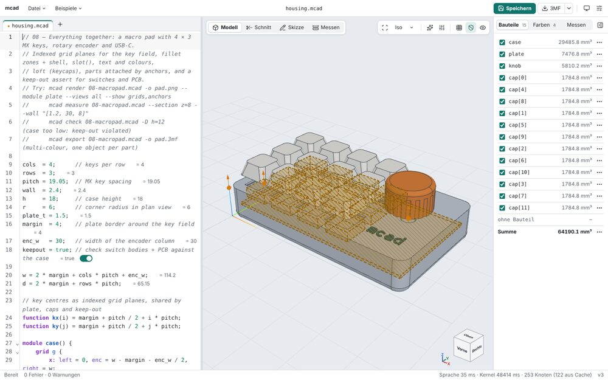
08-macropad: no errors; evaluation in the browser 51.3 s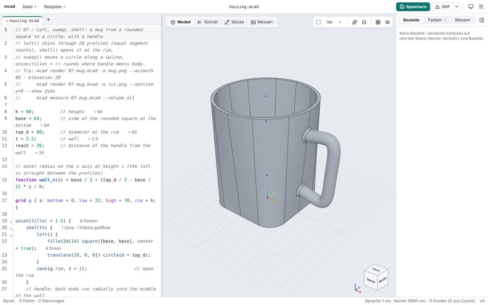
07-mug: no errors; evaluation in the browser 24.9 s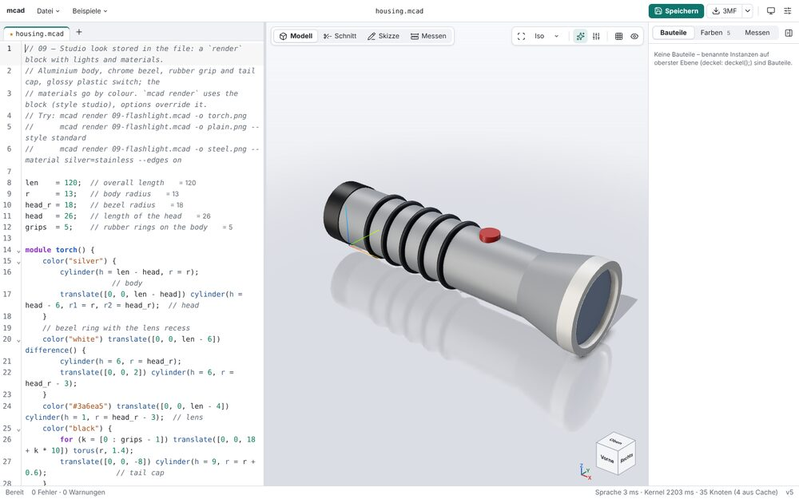
09-flashlight: no errors; evaluation in the browser 2.2 s8 Limitations and open points
| Item | Status |
|---|---|
| Speed against SMLib | solidcore is slower per operation on most models (open point 10 of the handover; 07-mug: fillet and shell); threads do not compensate where one chain dominates. Next step: profile solidcore's Boolean and fillet, parallelism inside a kernel call. |
| Variable radius | not supported (different radius laws on the edges of one fillet); clear error. |
sketch_cable_duct | Boolean differs from SMLib's (handover open point). |
| Browser | sequential (no threads in the Wasm build); Wasm 6.66 MB Brotli. |
| Desktop GUI | takes MCAD_JOBS, no --jobs flag; not built here (no WebKitGTK). |
Job::current() | with threads the first running node in evaluation order (spinner/watchdog text), an approximation. |
| Library default | Engine stays sequential unless set_workers is called (CLI, daemon, desktop engine do). |